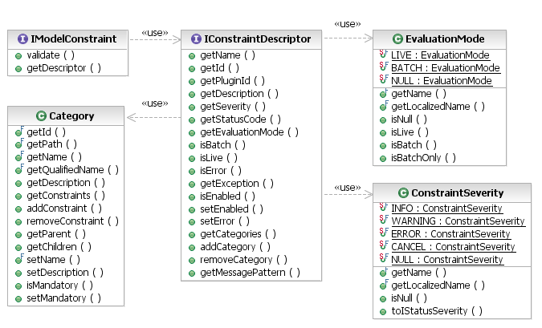
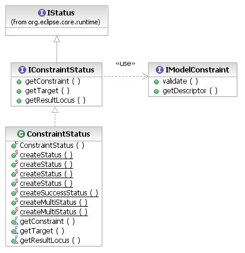

[as SVG]
Constraints are implemented in the EMF Validation Framework as instance of the IModelConstraint interface. A constraint has only two features: a validate() operation that evaluates the constraint on some target object, and a descriptor that supplies all of the meta-data about the constraint that the framework needs in order to work with it.

[as SVG]
The IConstraintDescriptor provides:
Much of this information appears in the preferences dialog, in the Model Validation / Constraints page, for presentation to the user.
Constraints can be implemented in Java or in other languages, according to the available contributions of language providers. The implementation of a constraint in some language is separate from the contribution of that constraint by a constraint provider.
[as SVG]
A Java constraint is implementated as a subclass of the AbstractModelConstraint class. It implements the validate() method accepting an IValidationContext and return an IStatus reporting the validation result.
The ValidationContext object provides a variety of information about the current validation operation, including:
In addition to this contextual information, the validation context provides a variety of other services to the constraint. Using the get/putCurrentConstraintData(), a constraint can cache some information that will help it to optimize the validation of multiple objects by persisting data between invocations on different objects in the same validation operation. This cache can take the form of any object.
Another time-saving measure is the skipCurrentConstraintFor() method, which allows a constraint to indicate that it has already validated some other objects while checking the current target, so that it does not need to be invoked on them later. For example, a constraint that checks for dependency cycles in a graph will, if it does or does not find a cycle, have indirectly validated a number of other objects in doing so.
An implementation of a constraint will report validation results when the constraint fails, in the form of an IStatus object. More precisely, validation problems are implemented as IConstraintStatuses. The constraint may construct these results, itself, using the factory methods on the ConstraintStatus class. Indeed, in order to create a multi-status result reporting multiple discrete problems, it is necessary to work with the ConstraintStatus class.

[as SVG]
For simpler cases, the IValidationContext provides convenient API for creating the validation results. The addResult() and addResults() methods add problem elements to the result. These are elements that are somehow related to the violation of the constraint on the target element, which should be highlighted when the user double-clicks the problem marker reporting the violation.
The createFailureStatus() method creates a result status encapsulating the current result set (as constructed via addResult() calls) and referencing the current constraint and target element. The arguments to the createFailureStatus() method are the positional arguments to slot into the error message pattern declared by the constraint's descriptor. The validation framework provides formatting of EObjects using the label providers from their metamodels' *.edit plug-ins, as well as pretty-printing of collections.
In the case that a constraint finds no problems, it should return the result of createSuccessStatus(). This method will return an appropriate status object if the client invoking validation requested results for successful constraint evaluations as well as failures. Otherwise, this method returns null. So, a well-behaved constraint will always use this to report success.
To illustrate several of these concepts, consider a constraint on the Library metaclass that requires libraries to be uniquely named. Note, in particular, that a violation of this constraint for one library necessarily means that multiple libraries are in violation of the same constraint:
public class LibraryNameIsUnique extends AbstractModelConstraint {
public IStatus validate(IValidationContext ctx) {
// the constraint is declared to target only Library, so we can safely cast
Library target = (Library) ctx.getTarget(); // object to validate
// does this library have a unique name?
Set<Library> libs = findLibrariesWithName(target.getName());
if (libs.size() > 1) {
// report this problem against all like-named libraries
ctx.addResults(libs);
// don�t need to validate these other libraries
libs.remove(target);
ctx.skipCurrentConstraintFor(libs);
// arguments are slotted into the message pattern
return ctx.createFailureStatus(new Object[] {
target, libs});
}
}
return ctx.createSuccessStatus();
}
}